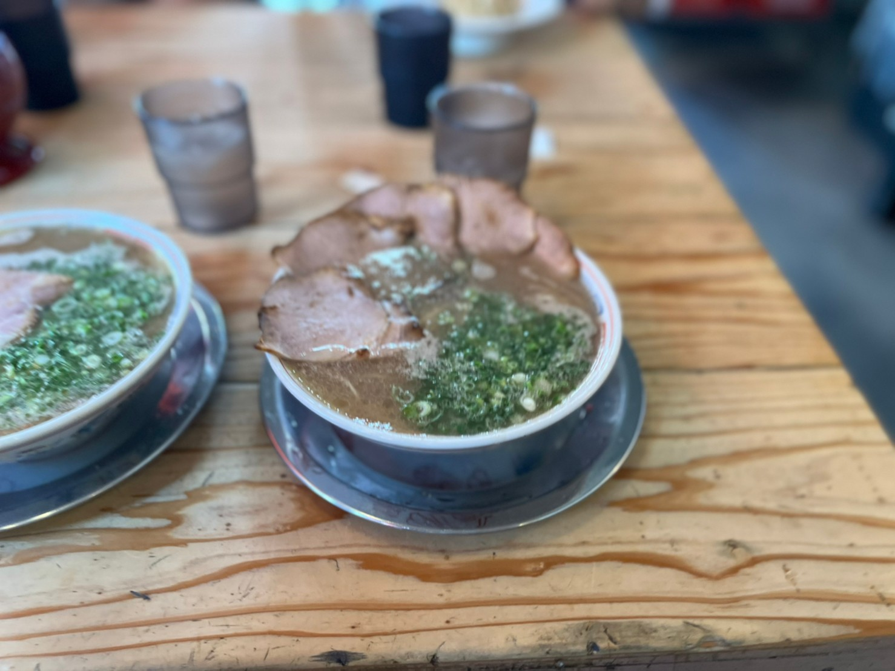
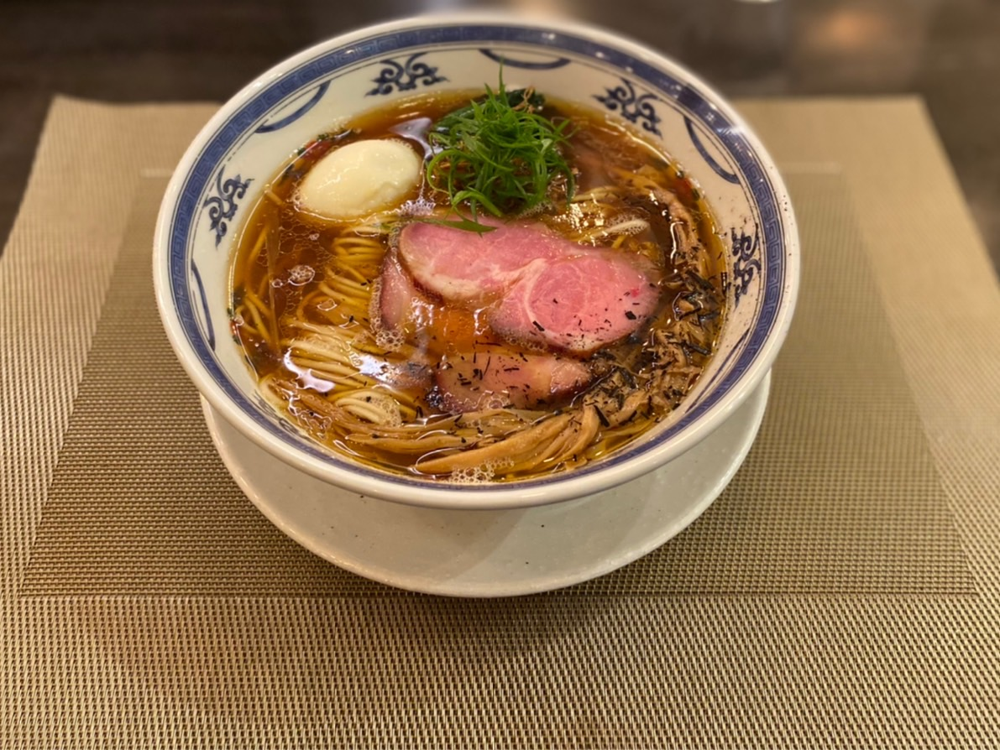
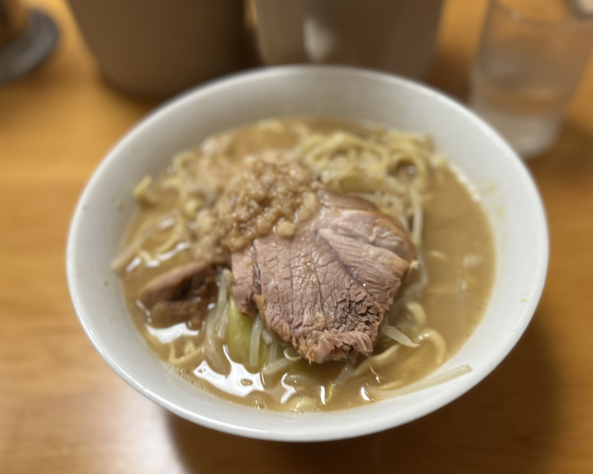

ラーメンの記録
博多ダルマ

- 豚骨ラーメンの名店博多ダルマ。お店の前から強烈な豚骨の香りが漂っていた。食べてみると思ったよりも臭みがなく食べやすい味だった。
- 食べログ
MENSHO

- 東京メトロ有楽町線の護国寺駅から徒歩５分のところにあるお店「ＭＥＮＳＨＯ」。醤油ラーメンを食べた。麺にスープが程よく絡まり、とても食べやすい。卵やチャーシューにもこだわりを感じた一杯。
- 食べログ
道玄坂 マンモス

- 渋谷駅から徒歩10分弱。道玄坂の途中にあるお店、「マンモス」。ここでは。つけ麵を食べた。麺は通常の麵と胚芽麺を選ぶことができる。スープがとても濃厚だが、最後にスープ割で頂くと、とても飲みやすくなり、さっぱりとした味わいだった。
- 食べログ
もみじや

- 明大前駅から徒歩15分くらいのところにあるお店「もみじや」。木曜ラーメン部として初の二郎系ラーメンのお店。スープが思いのほかマイルドな味わいで、麺との相性は抜群。普通の量でも麺の量は多めで注意が必要。
- 食べログ
横浜家系 侍

- 渋谷駅から徒歩3分の所にある。家系ラーメン「侍」。一口目のスープをすすったときには、電撃が走った。とにかくうまい。歴代家系ラーメンの中では、個人的TOP3にランク入りを 果たすほどの味だった。また行きたい。
- 評価
- 食べログ